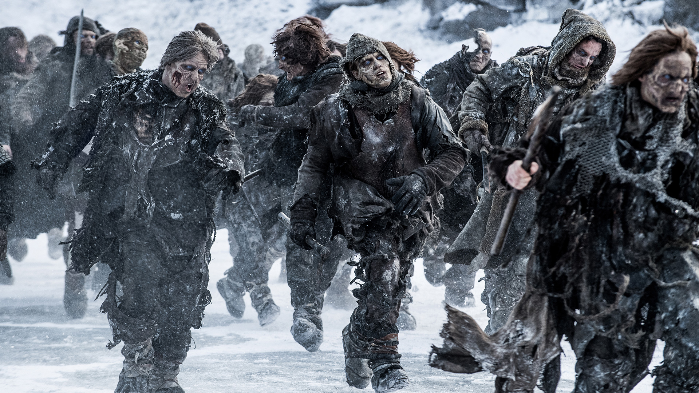
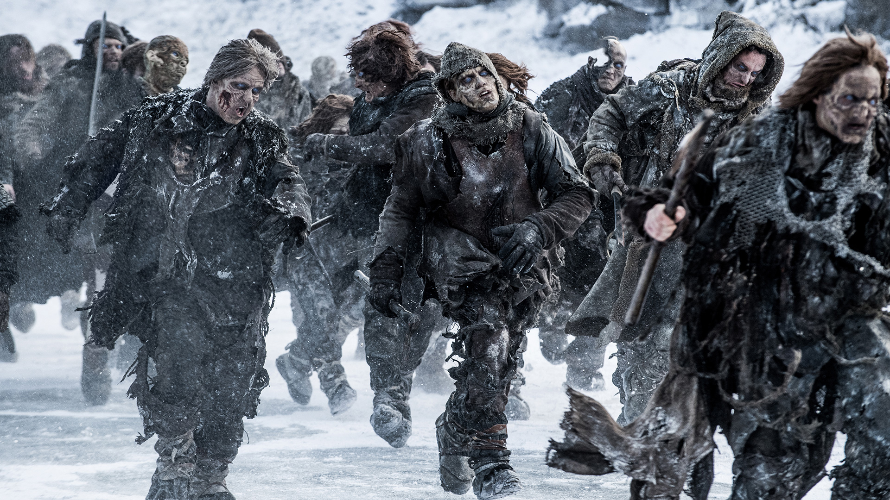

The White Walkers were an ancient race of formerly-human ice creatures
who came from the Far North of Westeros. After remaining hidden for
thousands of years, they returned. The White Walkers were thousands of
years old, coming from the time preceding the Age of Heroes. Born of
powerful and untested magic, they were created to protect the Children
of the Forest from the First Men, who had waged war on them ever since
they had arrived from Essos. However, the White Walkers eventually
broke free of the Children's control and became the most feared
creatures in Westeros, posing a threat to anything living.

 
